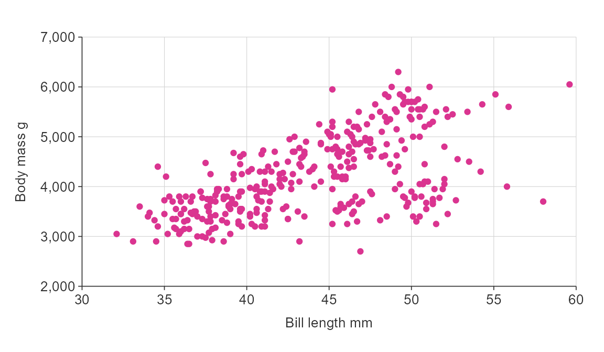

Purpose
simplevis is a package of ggplot2 and leaflet wrapper functions designed to support effortless high quality ggplot2 and leaflet visualisations for reports or interactive shiny apps. The intent is that these can be made more consistently with less effort, code and expertise than would otherwise be required.
Example
Below is a simple example dataset.
library(simplevis) library(dplyr) library(ggplot2) data <- tibble::tribble( ~pet, ~count, "Cat", 567, "Dog", 443, "Horse", 11) data #> # A tibble: 3 x 2 #> pet count #> <chr> <dbl> #> 1 Cat 567 #> 2 Dog 443 #> 3 Horse 11
We can make a ggplot2 plot quickly. However, it does not look ready for a report or app.
ggplot(data) + geom_col(aes(pet, count)) + labs(title = "Wellington pets, 2020", x = "Pet", y = "Count")

We can modify the design with ggplot2. However, there is a lot of code.
ggplot(data) + geom_col(aes(pet, count), fill = "#085C75", width = 0.75) + labs(title = "Wellington pets, 2020", x = "Pet", y = "Count") + scale_y_continuous(expand = c(0, 0), limits = c(0, 600)) + #hardcoded = bad! theme_minimal() + theme(plot.title = element_text(family = "Helvetica", hjust = 0.5, size = 11, face = "bold", colour = "#000000")) + theme(axis.title = element_text(family = "Helvetica", hjust = 0.5, size = 10, face = "plain", colour = "#323232")) + theme(axis.text = element_text(family = "Helvetica", hjust = 0.5, size = 10, face = "plain", colour = "#323232")) + theme(panel.grid.major.x = element_blank()) + theme(panel.grid.minor.y = element_blank()) + theme(axis.line = element_line(colour = "#323232", size = 0.3)) + theme(axis.ticks = element_line(colour = "#323232", size = 0.3)) + theme(axis.title.x = element_text(margin = margin(t = 10))) + theme(axis.title.y = element_text(margin = margin(r = 10)))

simplevis wraps these defaults into the functions, but allows the user to modify as required.
ggplot_vbar(data, pet, count, title = "Wellington pets, 2020", x_title = "Pet", y_title = "Count")

simplevis ggplot graph types
simplevis provides the following types of ggplot graph:
- horizontal bar (e.g.
ggplot_hbar) - vertical bar (e.g.
ggplot_vbar) - line plot (e.g.
ggplot_line) - point plot (e.g.
ggplot_point) - boxplot (e.g.
ggplot_box)
For each graph type 4 functions are available.
- A
ggplotnot coloured or faceted (e.g.ggplot_hbar)
plot_data <- ggplot2::diamonds %>% mutate(cut = stringr::str_to_sentence(cut)) %>% group_by(cut) %>% summarise(average_price = mean(price)) %>% mutate(average_price = round(average_price / 1000, 1)) %>% mutate(cut = factor(cut, levels = c("Fair", "Good", "Very good", "Premium", "Ideal"))) ggplot_hbar(plot_data, average_price, cut, title = "Average diamond price by cut", x_title = "Average price ($US thousands)", y_title = "Cut")

- A
ggplotcoloured, but not faceted (e.g.ggplot_hbar_col)
plot_data <- ggplot2::diamonds %>% mutate(cut = stringr::str_to_sentence(cut)) %>% group_by(cut, clarity) %>% summarise(average_price = mean(price)) %>% mutate(average_price = round(average_price / 1000, 1)) ggplot_hbar_col(plot_data, average_price, cut, clarity, legend_ncol = 4, title = "Average diamond price by cut and clarity", x_title = "Average price ($US thousands)", y_title = "Cut")

- A
ggplotfacetted, but not coloured (e.g.ggplot_hbar_facet)
plot_data <- ggplot2::diamonds %>% mutate(cut = stringr::str_to_sentence(cut)) %>% group_by(cut, clarity) %>% summarise(average_price = mean(price)) %>% mutate(average_price = round(average_price / 1000, 1)) ggplot_hbar_facet(plot_data, average_price, cut, clarity, title = "Average diamond price by cut and clarity", x_title = "Average price ($US thousands)", y_title = "Cut")

- A
ggplotcoloured and facetted (e.g.ggplot_hbar_col_facet)
plot_data <- ggplot2::diamonds %>% mutate(cut = stringr::str_to_sentence(cut)) %>% group_by(cut, clarity, color) %>% summarise(average_price = mean(price)) %>% mutate(average_price = round(average_price / 1000, 1)) ggplot_hbar_col_facet(plot_data, average_price, color, clarity, cut, legend_ncol = 4, title = "Average diamond price by colour, clarity and cut", x_title = "Average price ($US thousands)", y_title = "Colour")

These ggplot graphs have been designed that users can convert them easily to html interactive objects by wrapping them in plotly::ggplotly(plot). A customised tooltip can be provided using the tip_var argument in simplevis functions with plotly::ggplotly(plot, tooltip = "text). Automated tip_text columns can be created using the add_tip function.
plot_data <- storms %>% group_by(year) %>% summarise(average_wind = round(mean(wind), 2)) plot <- ggplot_vbar(data = plot_data, x_var = year, y_var = average_wind, title = "Average wind speed of Atlantic storms, 1975\u20132015", x_title = "Year", y_title = "Average maximum sustained wind speed (knots)") plotly::ggplotly(plot) %>% plotly_camera()
The variable types supported by the different groups of functions are outlined below.
simplevis ggplot maps
simplevis provides the following types of ggplot map:
- simple feature (
sf) maps - spatial-temporal array (i.e.
stars) maps
Simple feature (sf) maps are maps of points, lines or polygons.
The following functions are available:
ggplot_sfggplot_sf_colggplot_sf_facetggplot_sf_col_facet
These functions work in the same way as the ggplot graph functions, but with the following key differences:
- Data must be provided in the format of an
sfobject. - Data must be of
POINT/MULTIPOINT,LINESTRING/MULTILINESTRING, orPOLYGON/MULTIPOLYGONgeometry types - Data can have any coordinate reference system (CRS), but it must be defined
- No
x_varandy_varvariables are required - There is a boundary specification, which allows for a further
sfobject as a boundary or administrative boundaries to be added to the map. An example New Zealand boundary (nz) has been provided with the package. - They do not support conversion to interactive objects through
plotly::ggplotly.
ggplot_sf(example_sf_point, boundary = nz, size = 0.25, title = "Site trends, 2008\u201317", title_wrap = 40)

pal <- c("#4575B4", "#D3D3D3", "#D73027") ggplot_sf_col(example_sf_point, trend_category, boundary = nz, size = 0.25, pal = pal, title = "Site trends, 2008\u201317", title_wrap = 40)

ggplot_sf_facet(example_sf_point, trend_category, boundary = nz, size = 0.25, title = "Site trends, 2008\u201317")

pal <- c("#4575B4", "#D3D3D3", "#D73027") ggplot_sf_col_facet(example_sf_point, trend_category, trend_category, boundary = nz, size = 0.25, pal = pal, title = "Site trends, 1990\u201317")

simplevis provides ggplot maps made for spatial temporal arrays (stars).
The following functions are available:
ggplot_sf_colggplot_sf_col_facet
These functions work in the same way as the ggplot sf map functions, but with the following key differences:
- No non-colouring functions have been made, as it is assumed that this functionality is not required
- They do not support conversion to interactive objects through
plotly::ggplotly. - Data must be provided in the format of a
starsobject. For,ggplot_sf_col, thestarsobject must have 2 dimensions x and y, and only 1 attribute layer. Required input. For,ggplot_sf_col_facet, the stars object must have 2 dimensions, x and y, and multiple named attribute layers with the usual convention of lower case and underscores. Useselect,slice,candsplitto get thestarsobject into the appropriate format.
ggplot_stars_col(example_stars, col_method = "quantile", col_cuts = c(0, 0.05, 0.25, 0.5, 0.75, 0.95, 1), title = "Site medians, 2013-2017", title_wrap = 40, legend_digits = 1)

map_data1 <- example_stars %>% rlang::set_names("A") map_data2 <- example_stars_2 %>% rlang::set_names("B") map_data <- c(map_data1, map_data2) ggplot_stars_col_facet(map_data, col_method = "quantile", col_cuts = c(0, 0.05, 0.25, 0.5, 0.75, 0.95, 1), title = "Site medians, 2013-2017")

simplevis leaflet maps
simplevis provides the following types of leaflet map:
- simple feature (
sf) maps - spatial-temporal array (i.e.
stars) maps
These work in the same way as the ggplot map functions, but with no boundary arguments.
Outputs are hidden to keep the size of the vignette manageable.
leaflet_sf(data = example_sf_polygon)
leaflet_sf_col(example_sf_polygon, density, col_method = "bin", col_cuts = c(0, 10, 50, 100, 150, 200, Inf), legend_digits = 0, title = "Modelled density, 2013-2017")
leaflet_stars_col(example_stars, col_method = "quantile", col_cuts = c(0, 0.05, 0.25, 0.5, 0.75, 0.95, 1), title = "Modelled density, 2013-2017")
shiny apps with simplevis
simplevis provides two template shiny apps called template1 and template2. Users can access these functions by using the run_template functions for the applicable app, and then clicking on the download_code button to access a zip file of the code.
run_template("template1") # a graph and table run_template("template2") # a leaflet map, as well as graph and table
For a simple app, the basic method to create an app is:
- run
run_template("template1")orrun_template("template2")and download the code to use as a template - In
get_data.R, extract, process and save your data into thedatasubfolder, including a zip file for download - In
make_app_vis.R, draft your visualisations with dummy character inputs - In
global.R, read your data in, and create any vectors required - In
ui.R, add a app title - In
ui.R. addradioButtonsand other widgets - In
server.R, add code within reactive plot_data and plot components, change any dummy character inputs to shiny user inputs. Add aisMobile = input$isMobilespecification to any simplevis graphs if you are looking to support mobile users as well as desktop - In
server.R, add code for map and table components, as applicable - In
www/About.Rmd, update as necessary - If using google tag-manager, obtain a tag and replace
GTM-XXXXXXXwith it in thewww/js/tag-manager-jsfile.
Iframing apps
Iframing apps can provide a great experience for users.
Template apps are build to be compatible with one of two approaches to iframing:
- if your website has ability for height responsive iframes, then follow the instructions described in the method developed by Paul Campbell.
- if your website does not support responsive iframes, then templates apps have css that supports a iframe of 750px for desktop users. The app developer can then code the iframe height to be bigger if a mobile user is detected. If this is not possible, a hyperlink to the app url can be provided to mobile users. Note if you are trying to support mobile users, it is not recommended to facet graphs.